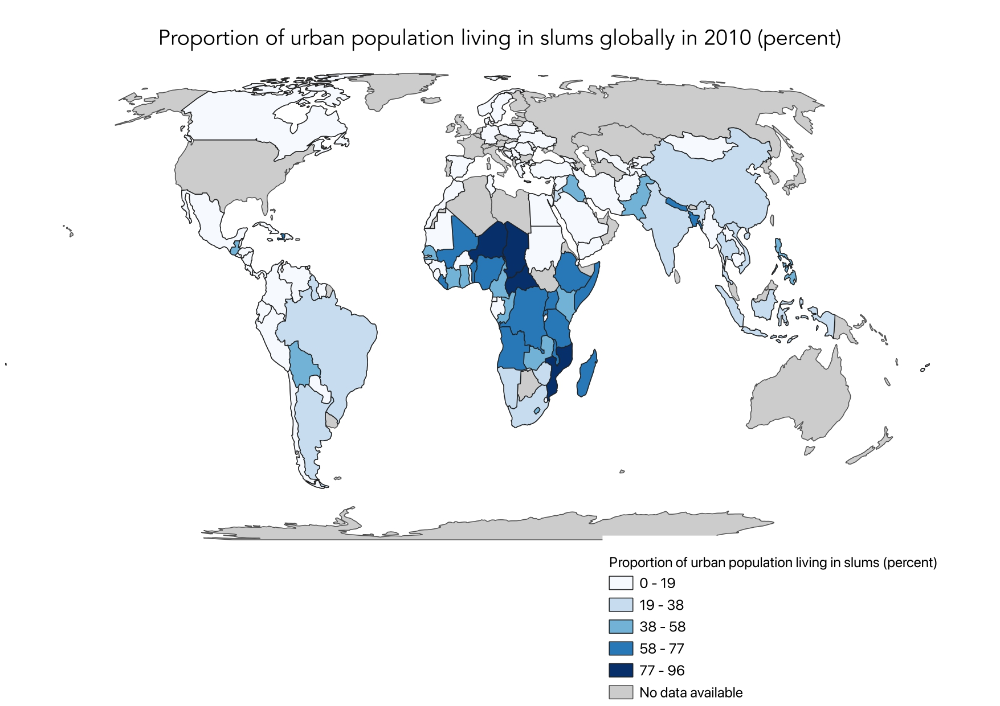

Choropleth Map
Choropleth Map on QGIS
Here is my choropleth map I made with real UN SDG indicator 11.1.1 data. SDG 11 ensures sustainable, resilient, inclusive, and accessible cities for all. Indicator 11.1.1 measures the proportion of the urban population living in slums. This indicator is the measurement for the target of ensuring access for all to adequate, safe and affordable housing and basic services.
A choropleth map is a type of thematic map in which areas (such as countries or regions) are shaded in proportion to the value of a particular variable, often statistical data, being represented. The areas are typically shaded in a gradient or range of colors to reflect the data values, making it easy to visualize and compare how the variable changes across the geographic region.
How was it made?
- For this map, two datasets were used: cleaned global data and the dataset of SDG indicator 11.1 from the UN Data Hub. Upon adding the datasets to the map, the dataset of the indicator 11.1 was cleaned for less potential errors when processing the data.
- I then joined the two files and created an additional layer, in which both datasets’ cells were matched up based on countries. This ensures that the indicators’ values are matched to the countries on the global map.
- I then edited the map 's symbology for the best and most accurate visualizations. I changed the gradient, colors, and classifications. I used equal intervals on QGIS.
- Then, I polished the map. I printed the map, and added a legend and title. I edited the font, size, and positioning of these aspects as well.
Skills Acquired
I have gained proficiency in data sourcing, cleaning, and preprocessing to ensure accuracy and relevance for mapping. Using QGIS, I developed skills in spatial data management, including importing shapefiles, defining geographic boundaries, and applying symbology techniques to represent data effectively. Through Esri Online, I learned to utilize web-based mapping tools to create interactive and dynamic choropleth maps, enhancing my ability to communicate spatial insights to diverse audiences. Additionally, I acquired knowledge in map design principles, such as color selection and classification methods, which are crucial for producing clear and informative visualizations.
Choropleth Web App on ArcGIS Online
To create an interactive map, I exported the map from QGIS into ArcGIS Online. I then altered the symbology and classification for the best visual representation. I used the natural classification. Then, I exported it into a webpage and used a slider option.
SDG 3.2.1 aims to end preventable deaths of newborns and children under 5 years of age. This goal is focused on improving health outcomes, particularly for young children.By comparing maps of these two indicators, you can see how improvements in urban living conditions (SDG 11.1.1) might correlate with better health outcomes for children (SDG 3.2.1). Improved housing and services can lead to better sanitation, reduced exposure to environmental hazards, and overall better health conditions for families, directly impacting child mortality rates.